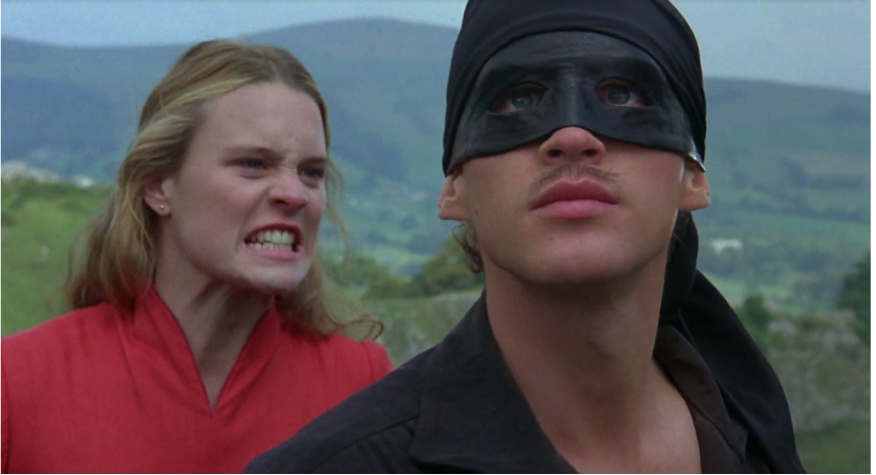

Victoria Dean
vdean@mit.edu
I am a first-year PhD student at The Robotics Institute at Carnegie Mellon University. My research interests are in machine learning and its application to robotics. I just spent a gap year working at Waymo. Before that, I was an undergrad in computer science at MIT, where I did research in Antonio Torralba's computer vision group. During my summer breaks, I did internships at Deep Genomics, Counsyl, Google, and Coursera.
Research
CaRL: Combining Imitation Learning with Reinforcement Learning

Combined imitation learning with reinforcement learning, which allows us to both learn from observed behavior and generalize beyond it. Applied the idea to a trajectory generation task.
Onboard Text Detection

Developed and deployed a new onboard text detection system that allows cars to recognize a set of important words to disambiguate a number of tricky situations. Used an accurate but expensive Google OCR system to train a low-latency onboard model.
Deep Learning for Branch Point Selection in RNA Splicing

Built BRANCHR, a state-of-the-art model for predicting branch point selection, a crucial step in RNA splicing. Convolutional neural network built with TensorFlow. Work accepted to WIML and MLCB at NIPS 2016. Selected for oral presentation at MLCB. Deep Genomics, summer 2016 [paper]
Understanding Personality with Deep Convolutional Neural Networks
Created personality dataset by having Mechanical Turk users take personality quizzes for characters in Hollywood movies. Trained convolutional neural network models to classify Skip-Thought Vectors from video sequences, which are correlated with character personality. Presented poster at EECScon 2016. MIT Computer Vision group, spring 2016 [poster]
Predicting the Future: Generative Models for Video

Experimented with CNN models to predict a frame given past frames. Presented poster at SuperUROP poster session. MIT Computer Vision group, Fall 2015 [poster]

Teaching
- Co-chair and lecturer for 6.S191, MIT's first and only "Intro to Deep Learning" course, IAP 2017 [video]
- MIT Global Teaching Labs: taught computer science to 4th and 5th year students at Tullio Buzzi technical school in Prato, Italy, IAP 2016 [slides]
- #HelloWorld: taught Boston-area middle school girls basic website making, spring 2015-fall 2016 [slides]
- Student Lab Assistant for 6.01, spring 2014
- Teaching Assistant at Khan Academy's Discovery Lab, summer 2012 [info]
Other
- I co-founded Code for Good, an MIT student group that works with Boston-area nonprofits on technical projects.
- Member of the MIT Society of Women Engineers board
- Languages: English (native), Mandarin (conversational), Spanish (beginner)